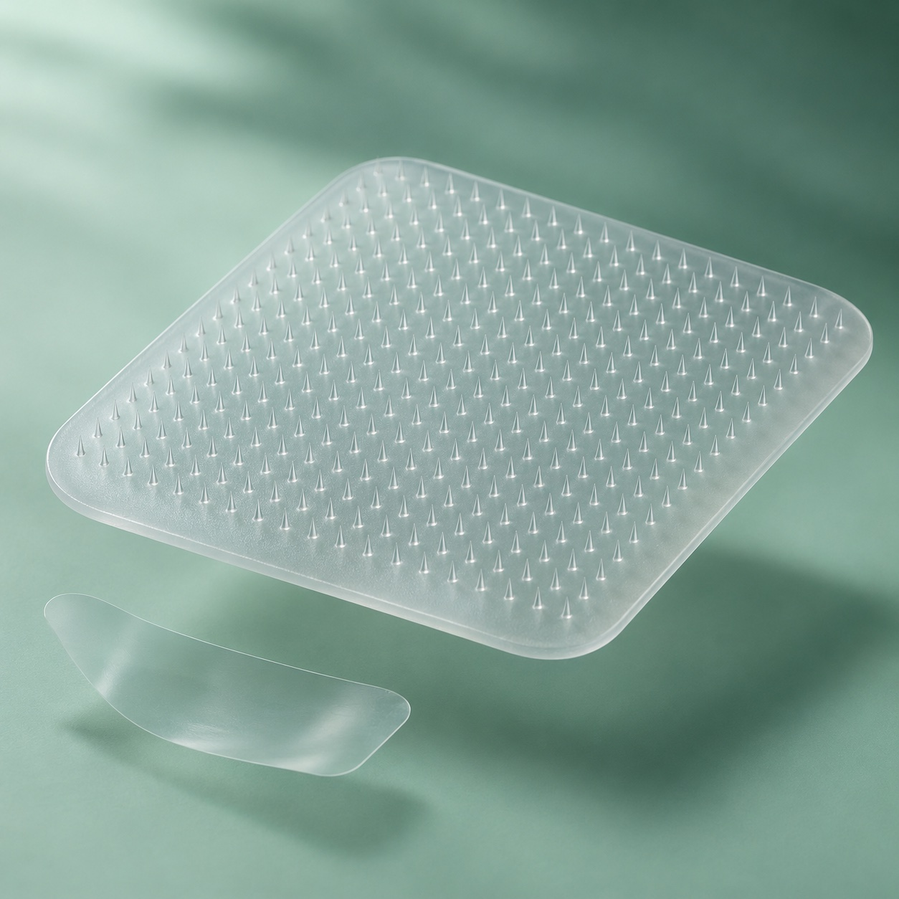

Комфортнее каждый день
Стремимся уменьшить дискомфорт от введения лекарств с помощью малоинвазивного формата.
Для пациентовМикроигольный пластырь · в разработке
Разрабатываем растворимые микроиглы, чтобы сделать регулярное введение лекарств комфортнее и самостоятельнее.
Доставка подходящих препаратов через кожу
на основе
гиалуроновой кислоты и ZnO.

Меньше дискомфортаЦель нашей разработки
Больше самостоятельностиС заботой о повседневной жизни
Доставка под задачуАдаптация под выбранный препарат
Технология ближе, чем кажется
Кожа — естественный барьер. Микроиглы помогают пройти её наружный слой и доставить действующее вещество.
Массив микроигл проходит наружный барьер кожи.
Схема показывает общий принцип. Состав, доза и время применения определяются для конкретного препарата.
Разработка вокруг человека
Для тех, кому нужны регулярные инъекции, каждый укол может означать боль, тревогу и зависимость от помощи.
Стремимся уменьшить дискомфорт от введения лекарств с помощью малоинвазивного формата.
Для пациентовИсследуем возможность самостоятельного применения, чтобы упростить регулярную терапию и поездки.
Для повседневной жизниСочетание гиалуроновой кислоты и наночастиц ZnO даёт основу для настройки свойств и транспорта вещества.
Для фармпартнёровЧто меняется
Сравниваем форматы доставки. Пригодность микроигл зависит от свойств препарата и требуемой дозы.
| Характеристика | Инъекции | Обычный пластырь | Микроиглы |
|---|---|---|---|
| Путь доставки | Игла и шприц | Через неповреждённую кожу | Через микроиглы |
| Наружный барьер кожи | Преодолевается иглой | Ограничивает выбор веществ | Преодолевается микроиглами |
| Острые элементы после применения | Требуют утилизации | Отсутствуют | Растворимая матрица |
| Настройка высвобождения | Зависит от лекарственной формы | Зависит от состава | Исследуем настройку HA/ZnO |
Доверие начинается с данных
Микроигольные системы изучают в лабораториях и клинических исследованиях. Вот работы, на которые мы опираемся при развитии проекта.
В рандомизированном исследовании I фазы показаны иммунный ответ и хорошая переносимость. Участники также применяли пластырь самостоятельно.
Rouphael et al. · The Lancet
Исследована другая микроигольная
система.
В лабораторных опытах с ципрофлоксацином состав HA/ZnO влиял на механические свойства микроигл и профиль высвобождения вещества.
Dada et al. · Macromol
Требуются дальнейшие исследования
биосовместимости.
Организации опубликовали целевой профиль пластырей для вакцины против кори и краснухи с требованиями к безопасности, эффективности и удобству.
Measles-rubella microarray patch TPP
Ориентиры для
разработчиков вакцинных систем.
Наш следующий шаг — собственные доказательства. Проект находится на стадии разработки. Безопасность, эффективность и совместимость нашего пластыря с выбранными препаратами предстоит подтвердить в собственных доклинических и клинических исследованиях. Документ ВОЗ/ЮНИСЕФ описывает требования к разработке вакцинных систем.
Открыты к сотрудничеству
Помогаем фармацевтическим компаниям исследовать переход к микроигольной форме доставки. Вместе выберем препарат, требования к дозе и целевой профиль высвобождения.
Команда проекта
глубинных интервью
с потенциальными потребителями
О пластыре
Сейчас мы разрабатываем платформу и выбираем терапевтическую задачу. Подписаться на новости проекта или предложить сотрудничество можно через кнопку «Узнать о запуске».
Совместимость зависит от свойств действующего вещества, необходимой дозы, стабильности и требуемой скорости доставки. Для каждого препарата нужны отдельные исследования.
Наша цель — уменьшить дискомфорт при введении лекарств. Ощущения и местные реакции зависят от конструкции и состава. Для нашего продукта их предстоит оценить в исследованиях.
Люди с регулярными инъекциями, включая людей с диабетом, — одна из аудиторий, чьи потребности мы изучаем. Применение для инсулина потребует отдельной разработки, проверки дозирования и клинических исследований. Изменять назначенную терапию следует с лечащим врачом.
Будьте рядом с развитием проекта
Узнайте о запуске или обсудите с нами
совместную разработку.